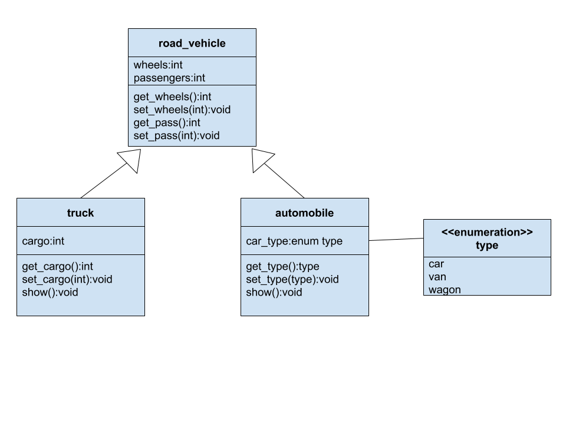
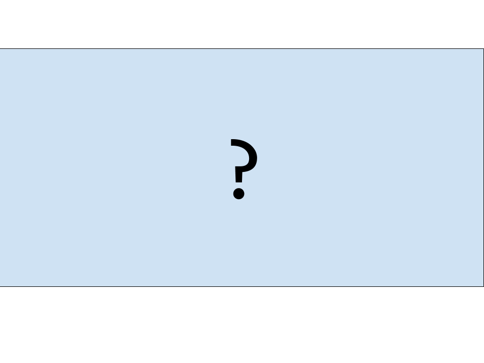
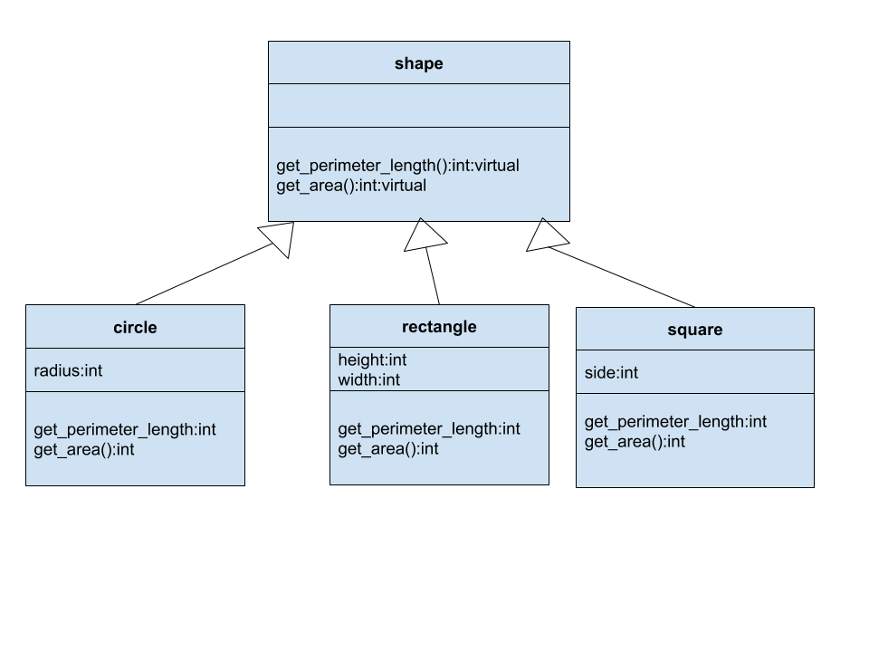

# INFO 450 Spring 2019 --- # Week 10 - April 2, 2020 --- # Class A <strong>Class</strong> defines a new data type that specifies the form of an object. Classes include data and functions that define the behavior on that object. Classes are the definition and are instantiated as <strong>Objects</strong> in C++. ## Pulled from Chapter 11 in your book. --- # Structure of classes When you define a class, you declare the data and code that it contains Not all classes need code and data, but they usually will. Data is contained in variables Code is in functions These variables and functions are <strong>members</strong> of the class --- # Defining a class Classes are defined with the keyword <strong>class</strong> Classes can have one or more constructors. ## Moving into Chapter 12, pg 278 Classes can have more than one constructor Having more than one constructor is called overloading. Different 'signatures' --- # Timer - Class ```c++ //Build a clock class // When the 'run' function is called, the program counts down to zero #include <iostream> #include <cstdlib> #include <ctime> using namespace std; class timer{ private: int seconds; public: timer(const char *t){ seconds = atoi(t); } timer(int t) { seconds = t;} timer(int mins, int secs){ seconds = 60 * mins + secs;} void run(); }; void timer::run(){ clock_t t1 = clock(); cout << "Sleeping for " << seconds << " " << flush; while ((clock() / CLOCKS_PER_SEC - t1 / CLOCKS_PER_SEC) < seconds); cout << "Done\a" << endl << flush; // ring the bell } int main(){ timer a(2), b("5"), c(0,10); a.run(); b.run(); c.run(); return 0; } ``` <a href="timer.cpp">timer.cpp</a> --- #Dynamic Initialization In the previous example, we hard coded the values for the Timers. ```c++ timer a(2), b("5"), c(0,10); ``` Based on <strong>run time</strong> data, we can use dynamic data as parameters to our constructors: * user input * database records * read from a file ```c++ int main(){ char str[80]; cout << "Enter number of seconds: " ; cin >> str; timer a(str); a.run(); } ``` <a href="timer2.cpp">timer2.cpp</a> --- # Inheritance ## Chapter 14, pg 332 Inheritance is one ofthe core tenets of Object Oriented Programming. Inheritance allows us to define a hierarchy of objects. With this hierarchy, we can define common members for related items. In C++ Terminology, a class that is inherited from, is called the <strong>base</strong> class. The class that does the inheriting is called the <strong>derived</strong> class. A derived class can also be inherited from, allowing it to be a base AND derived class. --- # Road Vehicle ```c++ class road_vehicle { private: int wheels; int passengers; public: void set_wheels(int num) { wheels = num; } int get_wheels() { return wheels; } void set_pass(int num) { passengers = num; } int get_pass() { return passengers; } }; ``` Defines the structure of a 'road_vehicle' Data: wheels, passengers Public Functions: 'getters and setters', 'get\_\*', 'set\_\*' --- # Inherit - Extend ```c++ class truck : public road_vehicle { private: int cargo; public: void set_cargo(int size){ cargo = size;} int get_cargo() { return cargo; } void show(); }; void truck::show(){ cout << "Wheels : " << get_wheels() << endl; cout << "Passengers : " << get_passengers() << endl; cout << "Cargo Capacity: " << get_cargo() << endl; } int main(){ truck t1; t1.set_wheels(6); t1.set_passengers(2); t1.set_cargo(30000); t1.show(); return 0; } ``` <a href="truck.cpp">truck.cpp</a> --- # execution ```bash $ g++ truck.cpp $ ./a.out Wheels : 6 Passengers : 2 Cargo Capacity: 30000 ``` --- # Let's extend it again ```c++ enum type {car, van, wagon}; void automobile : public road_vehicle{ private: enum type car_type; public: void set_type(type t){ car_type = t; } enum type get_type() { return car_type; } void show(); }; void automobile::show(){ cout << "Wheels : " << get_wheels() << endl; cout << "Passengers : " << get_pass() << endl; cout << "Automobile Tp : "; switch(get_type()){ case van: cout << "van";break; case car: cout << "car";break; case wagon: cout << "wagon";break; } cout << endl; } int main(){ truck t1; automobile c; t1.set_wheels(16); t1.set_pass(2); t1.set_cargo(18000); c.set_wheels(4); c.set_pass(2); c.set_type(car); t1.show(); c.show(); } ``` # Execute ```bash $ g++ automobiles.cpp $ ./a.out Wheels : 16 Passengers : 2 Cargo Capacity: 18000 Wheels : 4 Passengers : 2 Automobile Tp : car ``` --- # UML Inheritance Class Diagram showing inheritance  --- # Runtime Polymorphism ## Chapter 15, page 361 Polymorphism is the term used to descibe the process by which different implementations of a function can be accessed via the same name. Polymorphism can be described as "one interface, multiple methods" Let's try something: --- ```c++ class road_vehicle { private: int wheels; int passengers; public: void set_wheels(int num) { wheels = num; } int get_wheels() { return wheels; } void set_pass(int num) { passengers = num; } int get_pass() { return passengers; } void show(); }; void road_vehicle::show(){ cout << "(r)Wheels : " << get_wheels() << endl; cout << "(r)Passengers : " << get_pass() << endl; } void truck::show(){ cout << "(t)Wheels : " << get_wheels() << endl; cout << "(t)Passengers : " << get_pass() << endl; cout << "(t)Cargo Capacity: " << get_cargo() << endl; } void automobile::show(){ cout << "(a)Wheels : " << get_wheels() << endl; cout << "(a)Passengers : " << get_pass() << endl; cout << "(a)Automobile Tp : "; switch(get_type()){ case van: cout << "van";break; case car: cout << "car";break; case wagon: cout << "wagon";break; } cout << endl; } ``` <a href="firstshow.cpp">firstshow.cpp</a> --- ```c++ int main(){ truck t1; automobile c; t1.set_wheels(16); t1.set_pass(2); t1.set_cargo(18000); c.set_wheels(4); c.set_pass(2); c.set_type(car); t1.show(); c.show(); road_vehicle r1 = c; road_vehicle r2 = t1; r1.show(); r2.show(); } ``` <a href="firstshow.cpp">firstshow.cpp</a> --- # What will be printed?  --- ```c++ $ g++ firstshow.cpp $ ./a.out (t)Wheels : 16 (t)Passengers : 2 (t)Cargo Capacity: 18000 (a)Wheels : 4 (a)Passengers : 2 (a)Automobile Tp : car (r)Wheels : 4 (r)Passengers : 2 (r)Wheels : 16 (r)Passengers : 2 ``` --- # Virtual Functions Allow the executable to find which 'show' method you really want to execute. ```c++ class road_vehicle { private: int wheels; int passengers; public: void set_wheels(int num) { wheels = num; } int get_wheels() { return wheels; } void set_pass(int num) { passengers = num; } int get_pass() { return passengers; } virtual void show(); }; ``` ```c++ int main(){ truck t1; automobile c; t1.set_wheels(16); t1.set_pass(2); t1.set_cargo(18000); c.set_wheels(4); c.set_pass(2); c.set_type(car); road_vehicle r1 = c; cout << "Base: r1" << endl; r1.show(); road_vehicle *p; p = &c; cout << "pointer: *p" << endl; p->show(); } ``` <a href="virtual.cpp">virtual.cpp</a> --- ```bash $ g++ virtual.cpp $ ./a.out Base: r1 (r)Wheels : 4 (r)Passengers : 2 pointer: *p (a)Wheels : 4 (a)Passengers : 2 (a)Automobile Tp : car ``` --- # Homework! Build this:  Based on: <a href="shapes.cpp"/> --- ```c++ #include <iostream> using namespace std; const int PI = 3; // for simplicity, we'll pretend PI is 3 class shape{ public: int get_perimeter_length(){ return -1; } int get_area(){ return -1; } }; class circle : public shape{ public: circle(int radius){ } int get_perimeter_length(){ return -1; } int get_area(){ return -1; } }; class rectangle : public shape{ public: rectangle(int height, int width){ } int get_perimeter_length(){ return -2; } int get_area(){ return -2; } }; class square : public shape{ public: square(int side) { } int get_perimeter_length(){ return -3; } int get_area(){ return -3; } }; int main(){ shape *s1; circle c(3); s1 = &c; cout << "Perimeter: " << s1->get_perimeter_length() << " : Area " << s1->get_area() << endl; square s(3); s1 = &s; cout << "Perimeter: " << s1->get_perimeter_length() << " : Area " << s1->get_area() << endl; rectangle r(4,5); s1 = &r; cout << "Perimeter: " << s1->get_perimeter_length() << " : Area " << s1->get_area() << endl; return 0; } ``` --- # As is, it prints this: ```bash $ g++ shapes.cpp && ./a.out Perimeter: -1 : Area -1 Perimeter: -1 : Area -1 Perimeter: -1 : Area -1 ``` But when you're done.... it should print this: ```bash $ ./a.out Perimeter: 18 : Area 27 Perimeter: 12 : Area 9 Perimeter: 18 : Area 20 ``` --- # Hints ONLY change code INSIDE the 'class' definitions All of the language constructs you need to know about are in this week's slides. This is due by End of Day(11:59:59PM EST) APRIL 8th, 2020 WEDNESDAY NIGHT/MIDNIGHT so we can go over it in class next week. Filename must be: github.com/your-repository/week10/shapes.cpp Do NOT change the output at all. I will be doing some sneaky things, but looking at your output EXACTLY as it is. Email me when you're done, that makes grading easier. --- --- --- --- --- --- ---